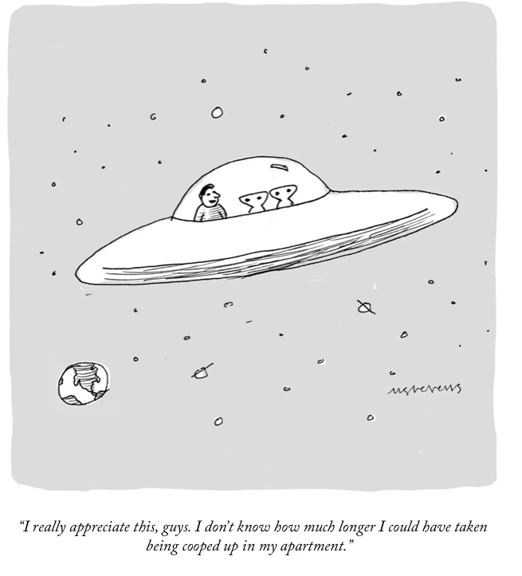
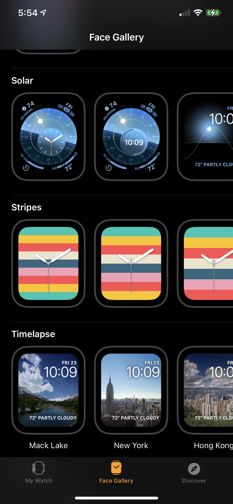
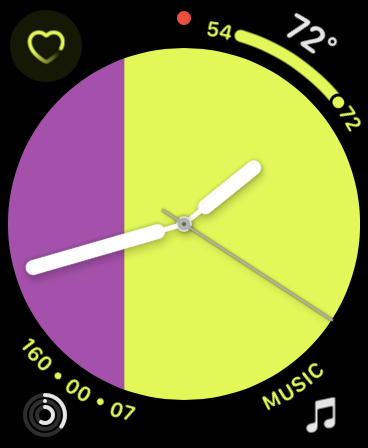
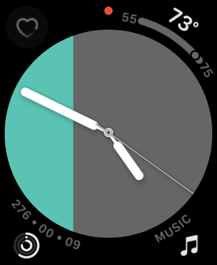

February 17, 2021
on current events
Here is a really good explainer and FAQ of the Pfizer and Moderna vaccines and the current state of COVID-19 vaccinations, by the Washington Post.
COVID-19 vaccine rollout is happening and though demand is much higher than supply, the rollout is accelerating. The charts show examples:
In just four weeks, the Biden-Harris administration has taken decisive action to increase the speed, scale and supply of vaccinations. Since January 20, the average daily doses administered has increased by 112% and weekly allocations to jurisdictions have increased by 57%. pic.twitter.com/DGYtE2kahv
— Benjy Renton (@bhrenton) February 17, 2021
The status as of Feb 14, 2021:
2,242,472 doses have been reported administered in the last 24 hours, according to the CDC, the highest reporting day yet.
— Benjy Renton (@bhrenton) February 14, 2021
Doses Delivered: 70,057,800
Doses Administered: 52,884,356
75.5% of delivered doses have been administered (a record high).https://t.co/iOxA7H128S pic.twitter.com/C1lD3D6Qm8
Here is another view , as of Feb 16, 2021: Vaccinate America dashboard status.
Update as of today (Feb 17, 2021), from Andy Slavitt:
UPDATE: 1 in 20 Americans is fully vaccinated. 1 in 8 have had at least their first shot and every state in the country has now given the first dose to at least 1 in 10 people.
— Andy Slavitt (@aslavitt46) February 17, 2021
Today (Feb 17, 2021), the US is planning on key investments to ramp up the Covid-19 testing: $650 M for K-8 school testing and congregate settings, $815 M to testing supply manufacturing, and $200 M to genomic sequencing. More info posted on today's announcement, by the WH Briefing Room.
People without symptoms spread virus in more than half of cases, reports the Washington Post, based on CDC’s models.

New Yorker cartoon Mick Stevens, Feb 10, 2021
Apple and iOS news
iPhone 12 Pro Max is the most popular 5G phone in America.
Tim Cook wants to make health and wellness Apple’s greatest legacy, reports Outside Magazine. The article includes a podcast interview with Tim Cook. This is very worthwhile reading & listening to, as it gives a perspective of Cook’s thinking and philosophy that we don’t often get from various other quick interviews.
Apple Watch Is Now Worn on 100 Million Wrists, as estimated by market analysis by Above Avalon. Also, `As of the end of 2020, approximately 10% of iPhone users were wearing an Apple Watch. This is a high percentage given the diverse technological wants and needs of those in the iPhone installed base.’
Apple looks to make sleep tracking unobtrusive with slim bed sensors, speculates and reports AppleInsider. `As well as Apple's acquisition of Beddit for its technology, the company has been persistently pursuing new methods of tracking sleep as part of its health features. Two newly-revealed patent applications suggest that it is particularly focusing on devices that can be laid upon a bed, yet not disturb the very sleep they're intended to monitor.’
Apple files for patent: For An Airbag System For An ‘apple Car’, reports AppleWorld! Here is the Apple patent `Airbag-based occupant safety system’.
Apple has been granted an AirPods Max Patent that reveals making them Lighter by possibly using Glass Earcups, reports PatentlyApple. `To ensure that the glass doesn’t crack easily in a drop incident, Apple’s patent describes using an asymmetrical chemical strengthening process for the glass.’`
Facebook's Zuckerberg tells staff to ‘inflict pain’ on Apple , as privacy battle escalates, reports the WSJ. Mark Zuckerberg told staffers that FB needs to “inflict pain” on Apple due to their efforts to protect user privacy, which stands in the way of Facebook’s business model. The FB model relies on collecting personal user data and tracking users without explicit consent in order to sell targeted advertising. In other words, the individual Facebook user is the product, not the customer, and Apple's privacy protection is impeding this in a fundamental way.
[ RUMOR ] Facebook plotting Apple Watch competitor for as soon as 2022, reports 9to5mac.
Apple Maps to gain Waze-like features for reporting accidents, hazards and speed traps, reports TechCrunch.
iOS and Watch apps
WakeOut won Best App of the Year in 2020, as we saw in our previous iPUG meeting. Olga reports using it for the past few weeks and recommends it highly. It’s deceptively simple but effective in helping you insert brief periods of movement throughout the day. There are morning wake-out video clips, mid-day, and even wind-down for bedtime. It’s very enjoyable and customizable. You can send a movement video clip to someone even if they do not have an iPhone. This is especially useful for those working from home during the pandemic or lockdowns, stuck at a desk most of the day: the app offers enjoyable breaks and even includes desk exercises, hand and neck stretches, and more. But it also offers brief exercises for anyone, in any shape or situation. To use the app, you need to enable a subscription but you can try it out for a month for free by canceling before payment is due, as they describe. (Paid subscriptions continue otherwise, by month for $5/mo or $25/year for a family.) Here is their FAQ page.
This is delightful and practical, like Google Earth for radio across the globe: Radio.garden lets you move around the map and listen to radio stations live. You can do it on a web browser and there is an app for iOS. Here is Tucson-based radio station KUAT.
Pat points us to TripWhistle, an app to help you when you are having an emergency. It provides international emergency phone Numbers (911, 112, etc.) for travelers. (It is notale that the app asks for permission to access all your contacts. Olga reports trying the app and declining access to contacts.)
[ DEMO ] New collaboration feature by GoodNotes. Recall that GoodNotes is a natural note-taking app we have talked about in the past. They have just added the ability to collaborate with others. Multiple people can work on the same notebook or the same page simultaneously. To do so, send in invitation link to someone, via text message. This can be very handy especially during a pandemic lockdown but for any situation with remote collaborators.
tips & tricks
Apple HomePod offers the new Intercom feature. Here is a demo:
Eric points us to Apple's Manual Device and Data Access when Personal Safety is At Risk.
gadgets & accessories
Shane Whitley shows us how he added deck lights to his patio and made them smart by adding a smart outdoor switch by iDevices, which supports HomeKit. He also shows the hooks and brackets he bought from Lowes to set everything up:
Pay
App BitPay, the world’s largest provider of Bitcoin and cryptocurrency payment services, has announced support for Apple Pay. U.S. cardholders of the BitPay Prepaid Mastercard can add their card to Apple Wallet and spend with Apple Pay.
watch
When you look at the iPhone Watch app, you can see a gallery of available and customizable watch faces. The Stripes watch face is listed in the gallery as shown below:

The Stripes watch face is customizable. Olga points out you can create these designs, for example. This uses 3 stripes, 2 of which are the same color.

and modify the colors as you wish, depending on your mood or the clothes you are wearing every day:

privacy & security
Some fascinating data:
Google's iOS apps release cycle before & after Apple asks to disclose privacy labels.
— Thomasbcn (@Thomasbcn) February 2, 2021
Thie pattern is probably just a coincidence. We all know "transparency forms the bedrock of [their] commitment to users"... pic.twitter.com/UgJjAhWfkm